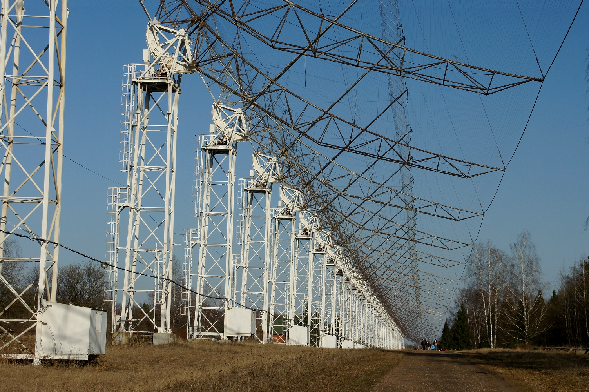

ПУЩИНСКАЯ РАДИОАСТРОНОМИЧЕСКАЯ ОБСЕРВАТОРИЯ АКЦ ФИАН
11-04-1956
Пущинская радиоастрономическая обсерватория АКЦ ФИАН – старейшее научное учреждение России, занимающееся радиоастрономией.
Днем рождения обсерватории принято считать 11 апреля 1956 года, когда было подписано Распоряжение Совета Министров СССР, разрешающее Академии наук СССР построить в Серпуховском районе здание радиоастрономической станции ФИАН и установить на этой станции радиотелескоп.
Однако этому событию предшествовало славное десятилетие зарождения и становления отечественной радиоастрономии, колыбелью которой по праву считается ФИАН. Так, еще в 1946 г. В.Л.Гинзбург предсказал, что радиодиаметр Солнца на метровых волнах должен заметно превосходить размеры его оптического диска, и уже в 1947 г. экспедиция к берегам Бразилии для наблюдений полного солнечного затмения, организованная по инициативе академика Д.Д.Папалекси, блестяще подтвердила это предсказание.
С 1948 г сотрудники лаборатории колебаний ФИАН организуют несколько постоянно действующих экспедиций в Крыму, где сооружают первые отечественные радиотелескопы и получают первые блестящие результаты, например, такие, как открытие Сверхкороны Солнца и обнаружение поляризации радиоизлучения Крабовидной туманности. Здесь под руководством С.Э.Хайкина и В.В.Виткевича формируется коллектив фиановских радиоастрономов первого поколения. Именно этот коллектив под руководством Виткевича В.В. создал в 1956 г. Радиоастрономическую станцию Физического института им. П.Н. Лебедева – РАС ФИАН. В 1990 г. она вошла в состав Астрокосмического центра ФИАН (составной частью которого стал также один из бывших отделов Института космических исследований). А в 1996 г. Пущинская радиоастрономическая станция была переименована в обсерваторию, получив нынешнюю аббревиатуру – ПРАО АКЦ ФИАН.